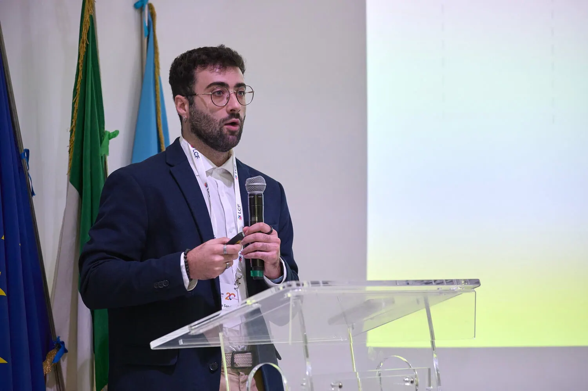

Conferencias Internacionales
Presentando investigación original ante expertos de todo el mundo.

Londres, 2025
CCP Annual Conference on Frontiers of Competition and Regulation
Presentación del paper "Pay-For-Delay: Preventing competition in pharmaceutical markets" ante investigadores y reguladores de competencia a nivel internacional.
Una de las conferencias más relevantes en el campo de la regulación y política de competencia, con participantes de universidades y organismos reguladores de Europa y América.
Roma, 2025
Lear Competition Festival
Presentación de investigación sobre mercados farmacéuticos y regulación de la competencia ante un panel de expertos internacionales en derecho y economía de la competencia.
Conferencia organizada por Lear en Roma, reuniendo a académicos, reguladores y profesionales del ámbito de la competencia de toda Europa.
